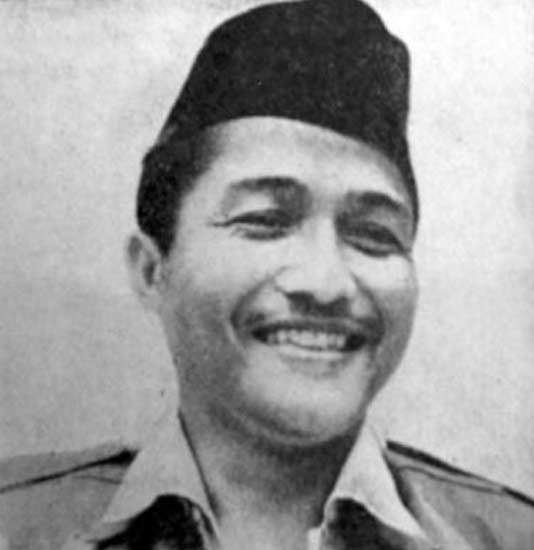

Tokoh Proklamasi dan Perannya
1. Soekarno berperan sebagai pembaca teks proklamasi. Ia lahir pada 6 Juni 1901 di Blitar, Jawa Timur. Ia diketahui aktif berjuang sebelum kemerdekaan dengan menjadi anggota Pusat Tenaga Rakyat (Putera), hingga ketua PPKI.
2. Mohammad Hatta ikut dalam perumusan teks proklamasi. Ia juga mengajukan usul untuk menandatangani teks proklamasi oleh seluruh tokoh yang hadir di rumah Laksamana Maeda saat itu. Pria yang lahir di Sumatera Barat, 12 Agustus 1902 ini ikut mendampingi Soekarno saat pembacaan teks proklamasi. Ia pun diangkat menjadi wakil Presiden mendampingi Soekarno sebagai Presidennya.
3. Ahmad Subardjo, pria yang lahir di Karawang pada 23 Maret 1897 ini merupakan pejuang senior dan anggota PPKI. Ahmad Subarjo juga terlibat sebagai penulis proklamasi di rumah Laksamana Maeda. Bahkan, pria bernama lengkap Raden Achmad Subardjo ini yang menjemput Soekarno dan Hatta di Rengasdengklok. Ia juga memutuskan bahwa proklamasi kemerdekaan harus dilaksanakan di Jakarta.
4. Fatmawati, istri proklamator ini terlibat sebagai tokoh proklamasi dalam kemerdekaan Indonesia. Fatmawati diketahui yang menjahitkan bendera pusaka Merah-Putih untuk dikibarkan saat upacara 17 Agustus 1945.
5. Soekarni lahir pada 14 Juli 1916 di Blitar. Selama hidupnya, ia aktif dalam perjuangan kemerdekaan dan pernah bekerja di kantor berita Domei, Sendenbu, dan kantor pusat Seinendan. Diketahui, ia juga yang mengusulkan agar naskah proklamasi kemerdekaan hanya ditandatangani oleh Soekarno dan Hatta, sebagai perwakilan bangsa Indonesia.
6. Sayuti Melik menjadi salah satu tokoh proklamasi dan berperan sebagai pengetik naskah. Sebelumnya, naskah proklamasi ditulis tangan dengan beberapa perubahan, setelah disetujui diserahkan kepada Sayuti.
7. Latif Hendraningrat merupakan pejuang yang tergabung dalam Pembela Tanah Air (Peta). Ia ikut berperan dalam peristiwa proklamasi kemerdekaan Indonesia dengan menaikkan bendera pusaka saat upacara 17 Agustus 1945.
8. Laksamana Maeda, pria berkebangsaan Jepang ini juga menjadi tokoh proklamasi kemerdekaan Indonesia. Ia merupakan seorang perwira dengan jabatan sebagai Wakil Komandan Angkatan Laut Jepang di Jakarta dan ikut bersimpati pada perjuangan kemerdekaan Indonesia. Laksamana Maeda mengizinkan para pejuang menggunakan rumahnya sebagai tempat perumusan naskah proklamasi.